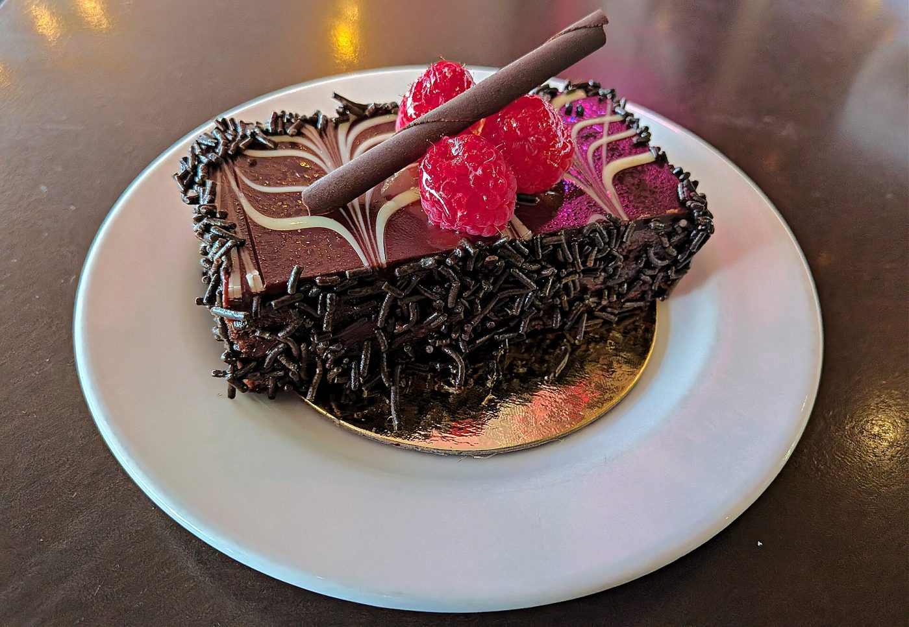

山口県長門市・油谷のカフェ
海のそばの町で、
午後のひと息を。
cafe fikaは、ケーキや軽食とともに、12時から17時のゆるやかな時間を過ごせるカフェです。
お店のこと
2022年1月、油谷に開いたカフェ。
お店のInstagramによると、cafe fikaは2022年1月22日にオープンしました。チーズケーキ、シフォンケーキ、タルトなどのケーキ類のほか、シェパーズパイ、オッソブーコ、ミートローフといった料理の写真も投稿されています。
情報源: Instagram @cafe_fika_191yuya
「fika(フィーカ)」はスウェーデン語でコーヒーとお菓子を楽しむひと休みのこと、とされています。ただし、店名の由来がこれにあたるかはお店から確認できていないため、このページの見出しや言い回しは制作側のイメージです。


メニュー
ケーキと、あたたかい一杯。
Instagramで確認できる範囲の内容です。最新のメニュー・価格はお店のInstagramをご覧ください。




口コミ
こんなふうに過ごせたら。
イメージ例海の近くの帰り道に、ふらりと立ち寄れそうなお店。ケーキと一緒にゆっくりしたい。
イメージ例午後の時間帯だけ開いているというのが、特別な感じがして行ってみたくなります。
イメージ例写真で見たシェパーズパイが気になっています。いつか食べに行きたいです。
口コミは制作側が作成したイメージ例であり、実在の声ではありません。


アクセス
ご案内
| 所在地 | 〒759-4503 山口県長門市油谷新別名175-1 |
|---|---|
| 電話 | 準備中 |
| 営業時間 | 12:00〜17:00(Instagramの記載による) |
| 定休日 | 日曜日・月曜日・金曜日(Instagramの記載による) |
| SNS | Instagram @cafe_fika_191yuya |
営業日時は変更されることがあります。お出かけ前にInstagramでご確認ください。